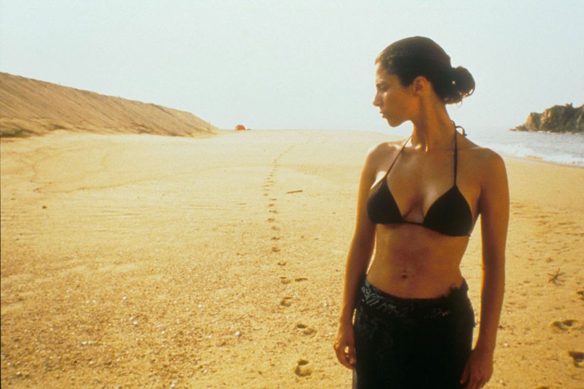
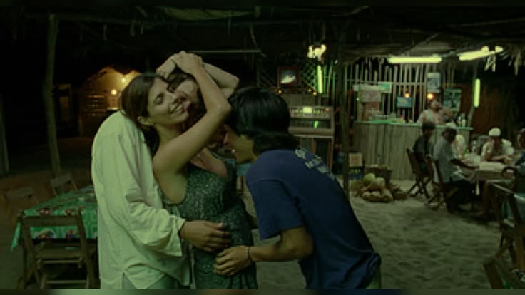
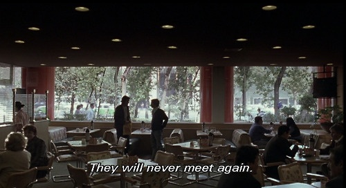

YTMT
EL FINAL
"Nunca volverán a verse"
Una vez que llegan a Boca del Cielo, Julio, Tenoch y Luisa disfrutan de sus últimos días juntos, sin realmente saber que el viaje estaba llegando a su fin. Durante una noche, los tres van a tomar alcohol, y luego de beber un poco se empiezan a dejar llevar por el momento, y comienzan a bailar los tres juntos. Esto termina en un beso y compartiendo una experiencia íntima entre los tres. Esta experncia cambia por completo la relación entre ellos. Al despertar, Julio y Tenoch sentian una incomodidad que los invadia, y es así que deciden regresar a la ciudad. En cambio, Luisa elige quedarse en la playa, en donde se siente en paz y decide pasar sus últimos días. aun más adelante, sale a la luz que Luisa padecía de un cáncer terminal, algo que decidio mantener en secreto a lo largo de todo el viaje.
Bastante tiempo después, Julio y Tenoch se reencuentran en una cafetería. Su amistad hace un tiempo que habia dejado de ser la misma. Entre las mentiras, los celos, y todas las situaciones que ocurrieron a lo largo del viaje a Boca del Cielo hizo que los amigos inseparables se volvieran extraños. Durante la conversación que tienen, Tenoch le comenta a Julio que Luisa murió un poco después de que ellos se fueran de Boca del Cielo. Finalmente, la película termina con la frase "Nunca volverán a verse", la cual representa que no solo su amistas llego a su fin, sino también el cierre de una etapa de sus vidas. La historia logra demostrar cómo un viaje el cual parecía una simple aventura entre amigos para conquistar a una mujer, terminó transformando de manera profunda a los tres personajes.


